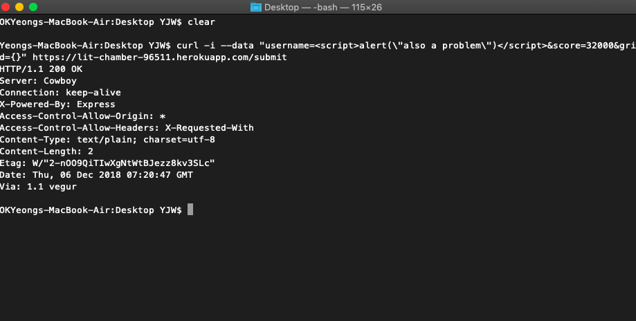
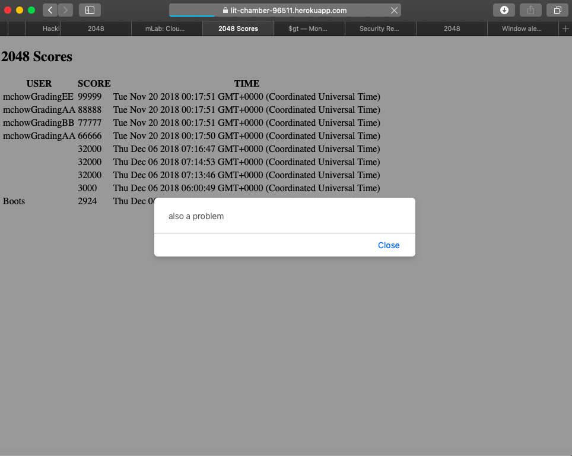

COMP 20 F2018 Security Lab
YEONG Jian Wei
Introduction
The task is to find security vulnerabilities in a web application. The web application
is essentially a server-side application and database that receives, stores, and displays
scores from G. Cirulli's 2048 game. (For it to work, a small modification to the 2048 game also
needs to be made. I downloaded a local copy of the game, then made this modification.)
I also got access to the server-side source code/database server.
The application is hosted at https://lit-chamber-96511.herokuapp.com, whereupon the main page
displays the highest scores. There is also a POST path (/submit) and a GET path for a single
user's scores (/scores.json?username=...).
Methodology
I used the 2048/Heroku app normally, inserting data in the database with the (local copy of the) game and with curl. I checked that everything was working: entries were being inserted into the database
, verifying via both the mlab interface as well as via the main get('/')/leaderboard method.
Next, I began penetration testing. First, without looking at the source code, I targetted the /submit POST method , and successfully inserted malicious code, both through the 2048 game, as well as through curl, showing that arbitrary code can be inserted that executes when users attempted to view the leaderboard. To prove this, I created alerts; see Issues found below.
Next, I targetted the database via the query string in the /scores.json GET method. After trying several permutations of query strings, I looked at the source code, and then constructed more informed query strings.
Abstract of Findings
Major security flaws were found in this web application. Some flaws allow attackers to inject
any code they want into the website, essentially giving them total control over the website
as displayed to users. Another flaw could cause a webpage to leak/view more information from the
database than intended, which would be disastrous if the data was confidential.
All of these flaws were caused by attackers using legitimate methods to send data to the website,
but the application itself failed to properly check incoming data for malicious content.
Issues Found; Technical Analysis
- Issue: XSS via 2048
- Location: index.js, line 23
- Severity: 9
- Description: Finished the XSS game, then entered HTML script in the username
field. This resulted in the script being entered in the database, which was then
executed when the database was rendered on the leaderboard.


- Resolution: Could be avoided by checking and sanitizing user input before it's used.
- Issue: XSS via curl
- Location: index.js, line 23
- Severity: 9
- Description: Essentially the same problem as above, except this time via curl.
With curl, I entered the HTML script as one of the parameters. This resulted in the script being entered in the database, which was then executed when the database was rendered on the leaderboard.


- Resolution: Could be avoided by checking and sanitizing user input before it's used.
Conclusion
The server-side was rife with simple yet critical vulnerablities such as XSS and
database injection. All the problems described above could have been avoided simply
by checking/sanitizing user input for potentially malicious content;
the most heavy-handed, yet simple and effective sanitization being to simply remove
all special characters from input before processing it.
References
2048 game source code
WebSecurify - Hacking Nodejs and Mongodb